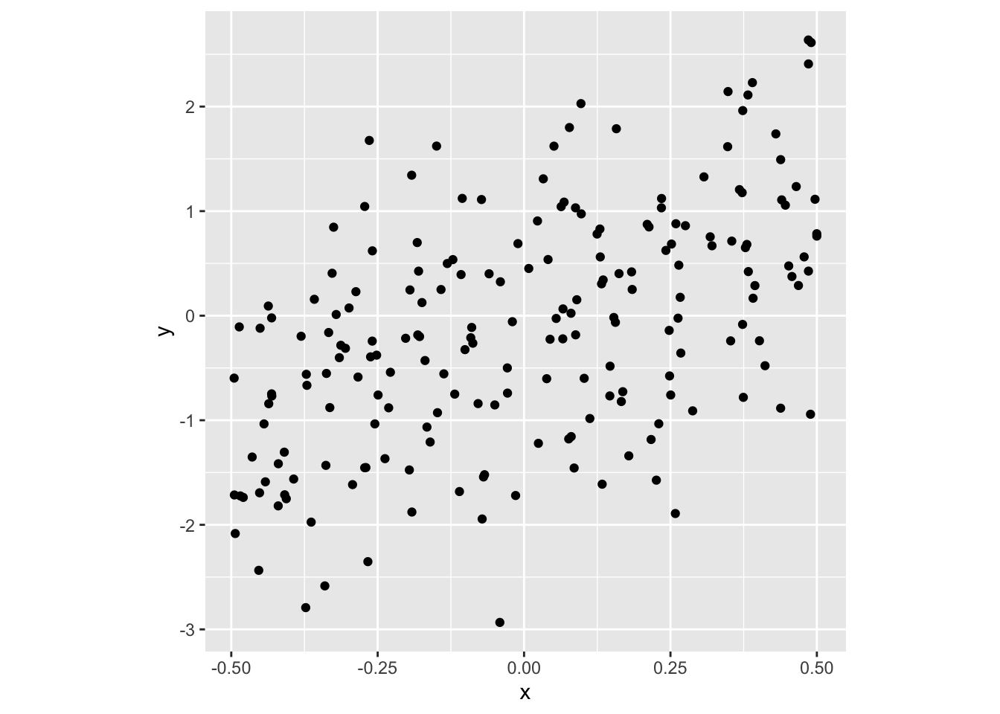
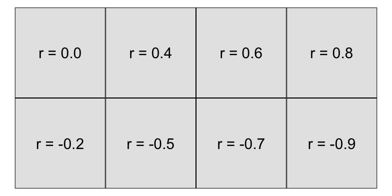

Chapter 7 Making comparisons between groups and strata
7.1 Pest resistance maize
- Pests, like thrips and spiders, damage maize crops. .font_small[Note: Maize = Corn]
- One strategy to protect crops against pests is to cultivate genetically modified (GM) maize that expresses a toxic protein.
data(gathmann.bt, package = "agridat")
gathmann.bt %>%
filter(gathmann.bt=="Bt") %>%
select(Thrips = thysan, Spiders = aranei) %>%
knitr::kable(format = "html")| Thrips | Spiders |
|---|---|
| 16.6 | 0.8 |
| 16.4 | 0.8 |
| 11.0 | 0.6 |
| 16.8 | 0.4 |
| 10.6 | 0.6 |
| 18.4 | 0.8 |
| 14.2 | 0.0 |
| 10.2 | 0.6 |
- The species abundance on 8 Bt GM maize is shown.
- Is the strategy working?
- Well it didn’t completely eliminate pests but did it lower the abundance?
- We can’t tell without knowing what the typical abundance is.
At the heart of quantitative reasoning is a single question: Compared to what?
- The actual experiment compared Bt variety to the isogenic control variety.
- How would you compare graphically?
g1 <- ggplot(df1, aes(gen, abundance, color = species)) +
geom_point(size = 3) +
facet_wrap(~species, scales = "free") +
scale_color_discrete_qualitative() +
guides(color = FALSE) +
labs(x = "", y = "Abundance", tag = "(A)") +
theme(axis.text.x = element_text(angle = 90, vjust = 0.5, hjust = 1))
g2 <- ggplot(df1, aes(gen, abundance, color = species)) +
geom_point(size = 3) +
scale_color_discrete_qualitative() +
guides(color = FALSE) +
labs(x = "", y = "Abundance", tag = "(B)", color = "Species") +
theme(axis.text.x = element_text(angle = 90, vjust = 0.5, hjust = 1))
g3 <- ggplot(df1, aes(gen, abundance, color = species)) +
geom_point(size = 3) +
facet_wrap(~species) +
scale_color_discrete_qualitative() +
labs(x = "", y = "Abundance", tag = "(C)", color = "Species") +
theme(axis.text.x = element_text(angle = 90, vjust = 0.5, hjust = 1))
g4 <- ggplot(df1, aes(species, abundance, color = gen)) +
geom_point(size = 3) +
facet_wrap(~gen, scales = "free") +
scale_color_discrete_qualitative(palette = "Harmonic") +
guides(color = FALSE) +
labs(x = "", y = "Abundance", tag = "(D)") +
theme(axis.text.x = element_text(angle = 90, vjust = 0.5, hjust = 1))
g5 <- ggplot(df1, aes(species, abundance, color = gen)) +
geom_point(size = 3) +
scale_color_discrete_qualitative(palette = "Harmonic") +
guides(color = FALSE) +
labs(x = "", y = "Abundance", tag = "(E)") +
theme(axis.text.x = element_text(angle = 90))
g6 <- ggplot(df1, aes(species, abundance, color = gen)) +
geom_point(size = 3) +
facet_wrap(~gen) +
scale_color_discrete_qualitative(palette = "Harmonic") +
labs(x = "", y = "Abundance", tag = "(F)", color = "Genotype") +
theme(axis.text.x = element_text(angle = 90, vjust = 0.5, hjust = 1))
(g1 + g2 + g3) / (g4 + g5 + g6)
Comparison should be fair - any differences should be due to the factor you wish to investigate.
g3 + labs(tag = "") + guides(color = FALSE)
Comparable populations and measurements
- Abundance is measured for two species: spiders and thrips.
- The abundance metric differ between species.
- Would you compare the .gray80[abundance of spiders on a Bt variety] to the .gray80[abundance of thrips on a isogenic variety]?
7.2 Maize kernels
- Plant pathologist
- Associate plant pathologist
- Professor of agronomy
- Assistant professor of agronomy
- Professor of philosophy
- Biologist
- Biologist (also author)
- Assistant in biology
- Data entry clerk (a.k.a. “Computer”)
- Farmer
- Professor of plant physiology
- Instructor in plant physiology
- Assistant in plant physiology
- Assistant in plant physiology
- Professor of biology
- 4 maize ears selected.
- 15 observers asked to classify kernels to (i) starchy yellow, (ii) starchy white, (iii) sweet yellow or (iv) sweet white.
- Ear 11 was slightly abnormal due to a fungus attack giving some pinkish tinge to some kernels.
- Is Ear 11 different?
data(pearl.kernels, package = "agridat")
df2 <- pearl.kernels %>%
pivot_longer(-c(ear, obs),
values_to = "count",
names_to = "type") %>%
mutate(color = ifelse(type %in% c("ys", "yt"),
"Yellow", "White"),
kind = ifelse(type %in% c("ys", "ws"),
"Starchy", "Sweet"))
df2A <- df2 %>%
group_by(ear, color, kind) %>%
summarise(count = sum(count))## `summarise()` has grouped output by 'ear', 'color'. You can override using the `.groups` argument.df2B <- filter(df2, obs=="Obs01") %>%
group_by(ear, kind, color) %>%
summarise(count = sum(count))## `summarise()` has grouped output by 'ear', 'kind'. You can override using the `.groups` argument.g1 <- df2B %>%
ggplot(aes(ear, count)) +
geom_col(aes(fill = color), color = "black",
position = "fill") +
scale_fill_manual(values = c("white", "yellow")) +
facet_wrap(~kind, scale = "free") +
labs(x = "", y = "Proportion", fill = "Color", tag = "(A)") +
guides(fill = FALSE) +
theme(axis.text.x = element_text(angle = 90, vjust = 0.5, hjust = 1))
g2 <- df2B %>%
ggplot(aes(ear, count)) +
geom_col(aes(fill = kind), color = "black",
position = "fill") +
scale_fill_discrete_qualitative() +
facet_wrap(~color, scale = "free") +
labs(x = "", y = "Proportion", fill = "", tag = "(B)") +
theme(axis.text.x = element_text(angle = 90, vjust = 0.5, hjust = 1))
g1 + g2 + plot_annotation(title = "Observer 1")
- All observer are counting the kernels of the same ears, however there are variations across observers.
- Notice Observer 1 classifies more kernels as yellow for Ear 11.
df2 %>%
mutate(type = interaction(kind, color)) %>%
ggplot( aes(obs, count, color = type, group = type)) +
geom_point(size = 3) +
geom_line() +
facet_wrap(~ear) +
theme(axis.text.x = element_text(angle = 90, vjust = 0.5, hjust = 1)) +
labs(x = "Observer", y = "Count", color = "Type") +
scale_color_discrete_qualitative()
7.3 Comparing like-with-like
Comparable conditions
- The variability due to other sources need to be accounted, removed or “averaged” out for a fair comparison.
(g1 + labs(tag = "", title = "Observer 1 only")) / (g1 %+% df2A + labs(title = "All observers", tag = ""))
Comparable variables and sources
- Data collected by different sources may have different rules. E.g. in Australia, “a COVID-19 death is defined for surveillance purposes as a death in a probable or confirmed COVID-19 case, unless there is a clear alternative cause of death that cannot be related to COVID19 (e.g. trauma)”[1]
- .gray80[Do other countries use the same definition?]
- The COVID-19 death data often have delays in reporting and data would be updated or corrected later.
7.4 Multi-environment soybean trial
- 58 soy varieties are grown in four locations in Queensland in 1970 then 1971.
- Soy breeders are interested in finding the “best” variety.
- So which variety is the best for yield?
australia.soybean %>%
mutate(gen = reorder(gen, yield)) %>%
ggplot(aes(gen, yield, color = loc, shape = as.factor(year))) +
geom_point(size = 3) +
labs(x = "Genotype", y = "Yield (tons/hectare)", shape = "Year", color = "Location") +
scale_color_discrete_qualitative() +
theme(axis.text.x = element_text(angle = 90, vjust = 0.5, hjust = 1)) 
7.5 Types of comparison
- Is the interest to find the best variety for a location?
- In that case, should the comparison be within location?
- Or is the interest to find the overall best variety at any location?
- Comparisons may be specific or general.
- A different type of comparison may require a different calculation or graphic for investigation.
ggplot(australia.soybean, aes(env, yield, group = gen)) +
geom_point(size = 6, color = "gray") +
geom_line(size = 1.3, color = "gray") +
geom_point(data = filter(australia.soybean, gen %in% c("G49", "G48", "G50")), aes(color = gen), size = 6) +
geom_line(data = filter(australia.soybean, gen %in% c("G49", "G48", "G50")), aes(color = gen), size = 1.3) +
scale_color_discrete_qualitative() +
labs(x = "Environment", y = "Yield",
color = "Genotype") 
7.6 Weight of calves with different diets
- 67 calves born in 1975 across 11 herds are fed of one of three diets with low, medium or high energy with their initial and final weights recorded.
- Different graphics and metrics will help to make comparison easier and fair.
df4 %>%
ggplot(aes(diet, weight, color = diet)) +
geom_point(size = 3) + facet_grid(when ~ herd, scale="free_y") +
scale_color_discrete_qualitative() +
labs(x = "Diet", y = "Weight", title = "Weight by herd, timing and diet") +
guides(color = FALSE) +
theme(axis.text.x = element_text(angle = 90, vjust = 0.5, hjust = 1)) 
- Weight data are paired so comparison of initial and final weights should be matched with the animal.
ggplot(df4, aes(when, weight, color = diet, group = animal)) +
geom_point(size = 3) + facet_wrap(~herd, nrow = 2) +
geom_line() +
labs(x = "", y = "Weight", color = "Diet")
- People are generally better at comparing lengths on a common scale instead of angles .font_small[(see Cleveland & McGill, 1985)]
- We could compare the difference in inital and final weight.
- Weight gain doesn’t take into account the initial weight though.
- We could consider computing the relative weight gain with respect to its initial weight.
g1 <- urquhart.feedlot %>%
mutate(diet = factor(diet,
levels = c("High", "Medium", "Low"))) %>%
ggplot(aes(diet, weight2 - weight1, color = diet)) +
geom_boxplot() +
labs(x = "", y = "Weight gain", color = "Diet") +
guides(color = FALSE)
g2 <- urquhart.feedlot %>%
mutate(diet = factor(diet,
levels = c("High", "Medium", "Low"))) %>%
ggplot(aes(diet, (weight2 - weight1)/weight1, color = diet)) +
geom_boxplot() +
labs(x = "", y = "Relative weight\ngain", color = "Diet") +
guides(color = FALSE)
g1 + g2
7.7 Swiss bank notes
- Comparisons are not always based on point estimates.
- Below is the comparison of distribution for the diagonal length of genuine and forged Swiss bank notes.
g1 <- ggplot(df5, aes(Diagonal, fill = status)) +
geom_histogram(binwidth = 0.2, color = "white") +
facet_grid(status ~ . ) +
labs(x = "Diagonal length (mm)",
y = "Count") +
guides(fill = FALSE) +
scale_fill_manual(values = c("#C7A76C", "#7DB0DD"))
g1
7.8 Comparing graphically
- From (A) we can see that the diagonal length distribution is quite different between forged and genuine notes.
- Comparing (B) and (C) is however difficult due to different aspect ratio and graphs are not in common scale nor alignment.
g2 <- df5 %>%
filter(status == "forgery") %>%
ggplot(aes(Diagonal)) +
geom_histogram(binwidth = 0.2, color = "white",
fill = "#C7A76C") +
labs(x = "Diagonal length (mm)", y = "Count", title = "Forgery", tag = "(B)")
g3 <- df5 %>%
filter(status == "genuine") %>%
ggplot(aes(Diagonal)) +
geom_histogram(binwidth = 0.2, color = "white",
fill = "#7DB0DD") +
labs(x = "Diagonal length (mm)", y = "Count", title = "Genuine", tag = "(C)")
(g1 + labs(tag = "(A)") + g2) / g3
ggplot(barley, aes(yield, variety, shape = year)) +
geom_point(size = 3) +
facet_wrap(~site) +
theme(plot.title.position = "plot",
plot.title = element_text(face = "bold")) +
labs(x = "Yield", shape = "Year", y = "Variety")
- 10 barley varieties were tested at 6 locations in 1931 and in 1932
- Do you notice anything about the yield with respect to the years?
7.9 Barley Yield
ggplot(barley, aes(yield, variety, color = year)) +
geom_point(size = 3) +
facet_wrap(~site) +
theme(plot.title.position = "plot",
plot.title = element_text(face = "bold")) +
labs(x = "Yield", y = "Variety", color = "Year") +
scale_color_discrete_qualitative()
- 10 barley varieties were tested at 6 locations in 1931 and in 1932
- Do you notice anything about the yield with respect to the years?
How about now?
ggplot(barley, aes(yield, variety, color = year)) +
geom_point(size = 3, alpha = 0.4) +
geom_point(data = subset(barley, (site=="University Farm" & variety == "No. 475") | (site=="Grand Rapids" & variety == "Velvet")), size = 3) +
facet_wrap(~site) +
theme(plot.title.position = "plot",
plot.title = element_text(face = "bold")) +
labs(x = "Yield", y = "Variety", color = "Year") +
scale_color_discrete_qualitative()
- Cleveland (1993) speculated that the year labels may have been reversed for some data.
- Wright (2013) investigated this by examining extended data from 1927 to 1936, in addition to weather covariates, and found that the observations are not particularly unusual.
7.10 Olive oils
g1 <-
df2 %>%
mutate(Area = fct_reorder(Area, palmitic)) %>%
ggplot(aes(Area, palmitic, color = Region)) +
geom_boxplot() +
scale_color_discrete_qualitative() +
guides(color = FALSE, x = guide_axis(n.dodge = 2))
g2 <- ggplot(df2, aes(Region, palmitic, color = Region)) +
geom_boxplot() +
scale_color_discrete_qualitative() +
guides(color = FALSE)
g3 <- ggplot(df2, aes(palmitic, color = Region)) +
geom_density() +
scale_color_discrete_qualitative() +
guides(color = FALSE)
g4 <- ggplot(df2, aes(palmitic, color = Region)) +
stat_ecdf() +
scale_color_discrete_qualitative()
g1 / (g2 | (g3 / g4)) + plot_layout(guides = "collect", byrow = FALSE)
ggplot(olives, aes(palmitoleic, palmitic, color = Area)) +
geom_point() +
scale_color_discrete_qualitative()
- Color is a great way to differentiate categories but if there are too many categories then it becomes hard to compare.
- In this scatter plot, there are too many overlapping points so splitting the data to multiple windows via facetting may make it easier to compare.
ggplot(olives, aes(palmitoleic, palmitic, color = Area)) +
geom_point() +
facet_wrap(~Area) +
scale_color_discrete_qualitative() +
guides(color = FALSE)
ggplot(olives, aes(palmitoleic, palmitic)) +
geom_point(data = dplyr::select(olives, -Area), color = "gray") +
geom_point(aes(color = Area)) +
facet_wrap(~Area)+
scale_color_discrete_qualitative() +
guides(color = FALSE)
7.11 England and East Indies trade data
g1 <- ggplot(EastIndiesTrade, aes(Year, Exports)) +
annotate("rect", xmin = 1701, xmax = 1714,
ymin = -Inf, ymax = Inf,
fill = "red", alpha = 0.3) +
annotate("rect", xmin = 1756, xmax = 1763,
ymin = -Inf, ymax = Inf,
fill = "red", alpha = 0.3) +
annotate("rect", xmin = 1775, xmax = 1780,
ymin = -Inf, ymax = Inf,
fill = "red", alpha = 0.3) +
geom_line(color = "#339933", size = 2) +
geom_line(aes(Year, Imports), color = "red", size = 2) +
geom_ribbon(aes(ymin = Exports, ymax = Imports), fill = "gray") +
labs(y = "<span style='color:#339933'>Export</span>/<span style='color:red'>Import</span>", tag = "(A)") +
theme(axis.title.y = ggtext::element_markdown())
g2 <- ggplot(EastIndiesTrade, aes(Year, Exports - Imports)) +
annotate("rect", xmin = 1701, xmax = 1714,
ymin = -Inf, ymax = Inf,
fill = "red", alpha = 0.3) +
annotate("rect", xmin = 1756, xmax = 1763,
ymin = -Inf, ymax = Inf,
fill = "red", alpha = 0.3) +
annotate("rect", xmin = 1775, xmax = 1780,
ymin = -Inf, ymax = Inf,
fill = "red", alpha = 0.3) +
geom_line(size = 2) +
labs(tag = "(B)")
g3 <- ggplot(EastIndiesTrade, aes(Year, (Exports - Imports)/(Exports + Imports) * 2)) +
annotate("rect", xmin = 1701, xmax = 1714,
ymin = -Inf, ymax = Inf,
fill = "red", alpha = 0.3) +
annotate("rect", xmin = 1756, xmax = 1763,
ymin = -Inf, ymax = Inf,
fill = "red", alpha = 0.3) +
annotate("rect", xmin = 1775, xmax = 1780,
ymin = -Inf, ymax = Inf,
fill = "red", alpha = 0.3) +
geom_line(color = "#001a66", size = 2) +
labs(y = "Relative difference", tag = "(C)")
g1 / g2 / g3 
- shows the export from England to the East Indies and the import to England from the East Indies in millions of pounds.
- Import and export figures are easier to compare by plotting the difference like in (B).
- Relative difference may be more of an interest - (C) plots the relative difference with respect to the average of export and import values.
- The red area correspond to War of the Spanish Succession (1701-14), Seven Years’ War (1756-63) and the American Revolutionary War (1775-83).
7.12 Melbourne’s daily maximum temperature
ggplot(df9, aes(month, temp)) +
geom_boxplot() +
labs(x = "Month", y = "Maximum temperature (°C)")
- Melbourne’s daily maximum temperature from 1970 to 2020.
- How are the temperature different across months?
- What about the temperature within a month?
7.13 Modelling and testing for comparisons
7.14 Pest resistance maize
ggplot(df1, aes(gen, abundance, color = gen)) +
ggbeeswarm::geom_quasirandom(size = 3) +
facet_wrap(~species, scales = "free") +
scale_color_discrete_qualitative() +
guides(color = FALSE) +
labs(x = "", y = "Abundance") +
theme(axis.text.x = element_text(angle = 90, vjust = 0.5, hjust = 1))
- The experiment compared abundance of spiders and thrips on Bt variety to the abundance of those on isogenic control variety.
- Would you say that the abundance of spiders and/or thrips are comparable between Bt variety and isogenic variety?
7.15 Two-sample parametric tests: \(t\)-test
- Assumes the two samples are independent and from the \(N(\mu_x, \sigma^2_x)\) and \(N(\mu_y, \sigma^2_y)\), respectively.
\[H_0: \mu_x - \mu_y = 0~\text{ vs. }~H_1: \mu_x - \mu_y \neq 0\]
\[T^* = \frac{\bar{X} - \bar{Y}}{SE(\bar{X} - \bar{Y})}.\] * Assuming \(\sigma^2_x = \sigma^2_y\), then \(T^* \sim t_{n_x + n_y - 2}.\) * A \(100(1 - \alpha)\%\) confidence interval for \(\mu_x - \mu_y\) is given as \((L, U)\) such that: \[P(L<\mu_x - \mu_y < U) = 1 - \frac{\alpha}{2}.\] * If \(0 \in (L, U)\), consistent with \(H_0\).
with(gathmann.bt,
t.test(thysan[gen=="ISO"],
thysan[gen=="Bt"],
alternative = "two.sided",
var.equal = TRUE,
conf.level = 0.95))##
## Two Sample t-test
##
## data: thysan[gen == "ISO"] and thysan[gen == "Bt"]
## t = -3.2182, df = 14, p-value = 0.006192
## alternative hypothesis: true difference in means is not equal to 0
## 95 percent confidence interval:
## -9.248813 -1.851187
## sample estimates:
## mean of x mean of y
## 8.725 14.2757.16 Confidence interval for two sample difference
- In the right, a 95% confidence interval for population mean difference is constructed repeatedly, assuming population mean difference is Normally distributed, from 100 samples of the same population.
- The population mean is zero.
- Each confidence interval is calculated as \[\bar{X} - \bar{Y} \pm \color{red}{t_{n-2, 0.975}}\times SE(\bar{X} - \bar{Y})\] where \(t_{n-2, 0.975}\) is \(t^*\) such that \[P(t_{n-2} < t^*) = 0.975.\]
7.17 Two sample non-parametric tests
7.17.1 Wilcoxon rank-sum test
- Suppose that \(X\) and \(Y\) are randomly selected values from two populations.
\[H_0: P(X > Y) = P(X < Y)\] vs.
\[H_1: P(X>Y)\neq P(X<Y)\] * All observations are ranked. * Test statistic is based on the sum of the ranks of one group.
with(gathmann.bt,
wilcox.test(thysan[gen=="ISO"],
thysan[gen=="Bt"],
alternative = "two.sided",
conf.int = TRUE,
conf.level = 0.95))##
## Wilcoxon rank sum exact test
##
## data: thysan[gen == "ISO"] and thysan[gen == "Bt"]
## W = 7, p-value = 0.006993
## alternative hypothesis: true location shift is not equal to 0
## 95 percent confidence interval:
## -9.4 -2.4
## sample estimates:
## difference in location
## -6.3gathmann.bt## gen thysan aranei
## 1 Bt 16.6 0.80
## 2 Bt 16.4 0.80
## 3 Bt 11.0 0.60
## 4 Bt 16.8 0.40
## 5 Bt 10.6 0.60
## 6 Bt 18.4 0.80
## 7 Bt 14.2 0.00
## 8 Bt 10.2 0.60
## 9 ISO 6.2 0.75
## 10 ISO 10.0 0.20
## 11 ISO 11.8 1.00
## 12 ISO 15.6 0.80
## 13 ISO 7.6 0.00
## 14 ISO 7.4 0.00
## 15 ISO 7.2 0.60
## 16 ISO 4.0 0.40\[\texttt{thysan}_i = \beta_0 + \beta_1\mathbb{I}(\texttt{gen}_i=\texttt{ISO}) + e_i\] where \(e_i \sim NID(0, \sigma^2)\).
- The least squares estimate for \(\hat{\beta}_1 = \bar{X} - \bar{Y}.\)
lm(thysan ~ gen, data = gathmann.bt) %>%
confint("genISO", level = 0.95)## 2.5 % 97.5 %
## genISO -9.248813 -1.851187- Notice that the above confidence interval is the same confidence interval from the \(t\)-test!
7.18 Weight gain of calves
- 67 calves born in 1975 across 11 herds are fed of one of three diets with low, medium or high energy with their initial and final weights recorded.
ggplot(df4, aes(when, weight, color = diet, group = animal)) +
geom_point(size = 3) +
facet_wrap(~herd, nrow = 2) +
geom_line() +
labs(x = "", y = "Weight", color = "Diet")
7.18.1 Weight gain of calves
- Modelling the response as weight gain with diet factor:
coef(lm((weight2 - weight1) ~ diet, data = urquhart.feedlot))## (Intercept) dietLow dietMedium
## 332.666667 -4.666667 -33.971014- The herd is thought to be an important factor contributing to the response.
- Modelling the response as weight gain with diet and herd factor:
# herd needs to be factor not integer
dat4 <- mutate(urquhart.feedlot, herdf = factor(herd))
coef(lm((weight2 - weight1) ~ herdf + diet, data = dat4))## (Intercept) herdf9 herdf16 herdf19 herdf24 herdf31
## 354.257353 -91.148529 -51.312039 7.410059 -63.221311 -4.666667
## herdf32 herdf33 herdf34 herdf35 herdf36 dietLow
## -51.189338 -36.083555 -15.179622 -3.423367 -34.974083 2.872233
## dietMedium
## -23.580408- Last model is the same as modelling the final weight with the initial weight as a covariate with slope fixed to 1:
coef(lm(weight2 ~ offset(weight1) + herdf + diet,
data = dat4)) ## (Intercept) herdf9 herdf16 herdf19 herdf24 herdf31
## 354.257353 -91.148529 -51.312039 7.410059 -63.221311 -4.666667
## herdf32 herdf33 herdf34 herdf35 herdf36 dietLow
## -51.189338 -36.083555 -15.179622 -3.423367 -34.974083 2.872233
## dietMedium
## -23.580408- Estimating slope for initial weight from the data:
coef(lm(weight2 ~ weight1 + herdf + diet,
data = dat4)) ## (Intercept) weight1 herdf9 herdf16 herdf19 herdf24
## 200.440174 1.243238 -79.102111 -51.238137 -6.864643 -75.406093
## herdf31 herdf32 herdf33 herdf34 herdf35 herdf36
## -33.044411 -56.517848 -62.152563 -23.610465 -29.219641 -75.555713
## dietLow dietMedium
## 1.212633 -30.912720dat4 <- lm(weight2 ~ weight1 + herdf + diet, data = dat4) %>% broom::augment()
ggplot(dat4, aes(.fitted, .resid)) +
geom_point(data = select(dat4, -herdf), size = 2, color = "gray") +
geom_point(size = 2, aes(color = herdf)) +
geom_hline(yintercept = 0) +
labs(x = "Fitted values", y = "Residual") +
scale_color_discrete_qualitative() +
facet_wrap(~herdf, nrow = 2) + guides(color = FALSE)
7.19 Soil nitrogen
ggplot(gomez.nitrogen, aes(trt, nitro, color = stage)) +
geom_point(size = 3) +
scale_color_discrete_qualitative() +
labs(x = "Fertilizer treatment",
y = "Soil nitrogen content (%)",
color = "Growth stage")
- Soil nitrogen content with 8 different fertilizer treatment is measured at 3 growth stage:
- P1 = 15 days post transplanting
- P2 = 40 days post transplanting
- P3 = panicle initiation
- Clearly the growth stage affects the soil nitrogen content but this makes it hard to compare the fertilizer treatments.
- Let’s model the nitrogen content as:
lm(nitro ~ stage + trt, data = gomez.nitrogen)- Considering just the stage effect:
fit1 <- lm(nitro ~ stage, data = gomez.nitrogen)
fit1data <- broom::augment(fit1) %>%
left_join(gomez.nitrogen, by=c("nitro", "stage")) %>%
mutate(trt = fct_reorder(trt, .resid))
ggplot(fit1data, aes(trt, .resid)) +
geom_boxplot() +
labs(x = "Fertilizer treatment",
y = "Residual of fit1")
- Here we expect no pattern:
fit2 <- lm(nitro ~ stage + trt,
data = gomez.nitrogen)
fit2data <- broom::augment(fit2) %>%
mutate(trt = fct_reorder(trt, .resid))
ggplot(fit2data, aes(trt, .resid)) +
geom_boxplot() +
labs(x = "Fertilizer treatment",
y = "Residual of fit2")
library(emmeans)
confint(pairs(emmeans(fit2, "trt"), adjust="none"))## contrast estimate SE df lower.CL upper.CL
## T1 - T2 -0.2117 0.116 86 -0.4420 0.018654
## T1 - T3 -0.3375 0.116 86 -0.5678 -0.107180
## T1 - T4 -0.2308 0.116 86 -0.4612 -0.000513
## T1 - T5 -0.0717 0.116 86 -0.3020 0.158654
## T1 - T6 -0.1492 0.116 86 -0.3795 0.081154
## T1 - T7 -0.3592 0.116 86 -0.5895 -0.128846
## T1 - T8 -0.2333 0.116 86 -0.4637 -0.003013
## T2 - T3 -0.1258 0.116 86 -0.3562 0.104487
## T2 - T4 -0.0192 0.116 86 -0.2495 0.211154
## T2 - T5 0.1400 0.116 86 -0.0903 0.370320
## T2 - T6 0.0625 0.116 86 -0.1678 0.292820
## T2 - T7 -0.1475 0.116 86 -0.3778 0.082820
## T2 - T8 -0.0217 0.116 86 -0.2520 0.208654
## T3 - T4 0.1067 0.116 86 -0.1237 0.336987
## T3 - T5 0.2658 0.116 86 0.0355 0.496154
## T3 - T6 0.1883 0.116 86 -0.0420 0.418654
## T3 - T7 -0.0217 0.116 86 -0.2520 0.208654
## T3 - T8 0.1042 0.116 86 -0.1262 0.334487
## T4 - T5 0.1592 0.116 86 -0.0712 0.389487
## T4 - T6 0.0817 0.116 86 -0.1487 0.311987
## T4 - T7 -0.1283 0.116 86 -0.3587 0.101987
## T4 - T8 -0.0025 0.116 86 -0.2328 0.227820
## T5 - T6 -0.0775 0.116 86 -0.3078 0.152820
## T5 - T7 -0.2875 0.116 86 -0.5178 -0.057180
## T5 - T8 -0.1617 0.116 86 -0.3920 0.068654
## T6 - T7 -0.2100 0.116 86 -0.4403 0.020320
## T6 - T8 -0.0842 0.116 86 -0.3145 0.146154
## T7 - T8 0.1258 0.116 86 -0.1045 0.356154
##
## Results are averaged over the levels of: stage
## Confidence level used: 0.95CI.none <- confint(pairs(emmeans(fit2, "trt"), adjust="none")) %>%
mutate(isSig = !(upper.CL > 0 & lower.CL < 0),
contrast = reorder(contrast, estimate))
ggplot(CI.none, aes(estimate, contrast)) + geom_segment(aes(x=lower.CL, xend=upper.CL, y=contrast, yend=contrast, colour=isSig), show.legend = F, size=1.5) + geom_point(size=2)+
geom_vline(xintercept=0, size=1.5, color="black") * From above, the 6 pairs of treatments: T3 & T5, T1 & T4, T1 & T8, T6 & T7, T1 & T3, T1 & T7 are significantly different.
* These confidence intervals are constructed without taking any regard for others.
* From above, the 6 pairs of treatments: T3 & T5, T1 & T4, T1 & T8, T6 & T7, T1 & T3, T1 & T7 are significantly different.
* These confidence intervals are constructed without taking any regard for others.
7.20 Controlling the family-wise error rate
7.21 Unadjusted
- Each interval has been constructed using a procedure so that when the model is correct, the probability that the “correct” population contrast is covered is 0.95. . . individually.
\[\bar{X} - \bar{Y} \pm \color{red}{t_{n-t,1 - \alpha/2}}\times SE(\bar{X} - \bar{Y})\] where \(\alpha = 0.05\) and \(t\) is the number of treatments.
- But, what is the probability that all intervals cover their corresponding true values simultaneously?
7.22 Bonferonni adjustment
- We can adjust the individual \(100(1-\alpha)\%\) confidence intervals so
\[\bar{X} - \bar{Y} \pm \color{red}{t_{n-t,1 - \alpha/(2m)}}\times SE(\bar{X} - \bar{Y})\] where \(m\) is the number of pairwise comparisons.
- So for 8 treatments, the number of pairwise comparisons is
choose(8, 2)## [1] 28confint(pairs(emmeans(fit2, "trt"),
adjust="bonferroni"))## contrast estimate SE df lower.CL upper.CL
## T1 - T2 -0.2117 0.116 86 -0.585 0.1619
## T1 - T3 -0.3375 0.116 86 -0.711 0.0361
## T1 - T4 -0.2308 0.116 86 -0.604 0.1427
## T1 - T5 -0.0717 0.116 86 -0.445 0.3019
## T1 - T6 -0.1492 0.116 86 -0.523 0.2244
## T1 - T7 -0.3592 0.116 86 -0.733 0.0144
## T1 - T8 -0.2333 0.116 86 -0.607 0.1402
## T2 - T3 -0.1258 0.116 86 -0.499 0.2477
## T2 - T4 -0.0192 0.116 86 -0.393 0.3544
## T2 - T5 0.1400 0.116 86 -0.234 0.5136
## T2 - T6 0.0625 0.116 86 -0.311 0.4361
## T2 - T7 -0.1475 0.116 86 -0.521 0.2261
## T2 - T8 -0.0217 0.116 86 -0.395 0.3519
## T3 - T4 0.1067 0.116 86 -0.267 0.4802
## T3 - T5 0.2658 0.116 86 -0.108 0.6394
## T3 - T6 0.1883 0.116 86 -0.185 0.5619
## T3 - T7 -0.0217 0.116 86 -0.395 0.3519
## T3 - T8 0.1042 0.116 86 -0.269 0.4777
## T4 - T5 0.1592 0.116 86 -0.214 0.5327
## T4 - T6 0.0817 0.116 86 -0.292 0.4552
## T4 - T7 -0.1283 0.116 86 -0.502 0.2452
## T4 - T8 -0.0025 0.116 86 -0.376 0.3711
## T5 - T6 -0.0775 0.116 86 -0.451 0.2961
## T5 - T7 -0.2875 0.116 86 -0.661 0.0861
## T5 - T8 -0.1617 0.116 86 -0.535 0.2119
## T6 - T7 -0.2100 0.116 86 -0.584 0.1636
## T6 - T8 -0.0842 0.116 86 -0.458 0.2894
## T7 - T8 0.1258 0.116 86 -0.248 0.4994
##
## Results are averaged over the levels of: stage
## Confidence level used: 0.95
## Conf-level adjustment: bonferroni method for 28 estimatesCI.none <- confint(pairs(emmeans(fit2, "trt"), adjust="bonferroni")) %>%
mutate(isSig = !(upper.CL > 0 & lower.CL < 0),
contrast = reorder(contrast, estimate))
ggplot(CI.none, aes(estimate, contrast)) + geom_segment(aes(x=lower.CL, xend=upper.CL, y=contrast, yend=contrast, colour=isSig), show.legend = F, size=1.5) + geom_point(size=2)+
geom_vline(xintercept=0, size=1.5, color="black")
- Now none are significantly different.
- Note: Bonferroni adjustment is quite conservative.
7.23 Mystery data
- Many inferences, e.g. using confidence intervals or \(p\)-values, are based on assumptions being met.
- From the model fit below can we suggest the following model?
\[\hat{Y} = -0.002 + 0.979x_1 + 0.998x_2 + 0.973x_3 + 0.995x_4\]
lm(y ~ x1 + x2 + x3 + x4, data=mystery_data) %>% broom::tidy()## # A tibble: 5 x 5
## term estimate std.error statistic p.value
## <chr> <dbl> <dbl> <dbl> <dbl>
## 1 (Intercept) -0.00204 0.0109 -0.187 0.852
## 2 x1 0.979 0.0151 64.8 0
## 3 x2 0.998 0.0155 64.4 0
## 4 x3 0.973 0.0154 63.1 0
## 5 x4 0.995 0.0109 91.6 0lm(y ~ x1 + x2 + x3 + x4, data=mystery_data) %>%
broom::augment() %>%
ggplot(aes(.fitted, .resid)) +
geom_point() +
labs(x="Fitted Values", y="Residual") 
Moral of the story: Don’t forget to check model diagnostics.
7.24 Parametric regression
Parametric means that the researcher or analyst assumes in advance that the data fits some type of distribution (e.g. the normal distribution). E.g. one may assume that \[\color{blue}{y_i} = \color{red}{\beta_0} + \color{red}{\beta_1} \color{blue}{x_i} + \color{red}{\beta_2} \color{blue}{x_i^2} + \epsilon_i,\] where \(\epsilon_i \sim N(0, \color{red}{\sigma^2})\).
- \(\color{red}{red} = \text{estimated}\)
- \(\color{blue}{blue} = \text{observed}\)
Because some type of distribution is assumed in advance, parametric fitting can lead to fitting a smooth curve that misrepresents the data.
7.25 Example
set.seed(1)
tibble(id = 1:200) %>%
mutate(x = runif(n(), -10, 10),
y = x^2 + rnorm(n(), 0, 5)) %>%
ggplot(aes(x, y)) +
geom_point() +
geom_smooth(method = "lm", se = FALSE,
formula = y ~ poly(x, 2),
size = 2, color = "red")
Still assuming a quadratic fit:
tibble(id = 1:200) %>%
mutate(x = runif(n(), -10, 10),
y = x^3 + rnorm(n(), 0, 5)) %>%
ggplot(aes(x, y)) +
geom_point() +
geom_smooth(method = "lm", se = FALSE,
formula = y ~ poly(x, 2),
size = 2, color = "red")
7.26 Simulating data from parametric models
- If a model is say: \[y = x^2 + e, \qquad e \sim N(0, 2^2)\] we can simulate say \(200\) observations from this model for \(x\in(-10,10)\) by code as shown on the right.
ggplot(df, aes(x, y)) +
geom_point()
7.27 Logistic regression
- Not all parametric models assume Normally distributed errors.
- Logistic regression models the relationship between a set of explanatory variables \((x_{i1}, ..., x_{ik})\) and a set of .monash-blue[binary outcomes] \(Y_i\) for \(i = 1, ..., r\).
- We assume that \(Y_i \sim B(n_i, p_i)\) and the model is given by
\[\text{logit}(p_i) = \text{ln}\left(\dfrac{p_i}{1 - p_i}\right) = \beta_0 + \beta_1x_{i1} + ... + \beta_k x_{ik}.\] * The function \(f(p) = \text{ln}\left(\dfrac{p}{1 - p}\right)\) is called the .monash-blue[logit] function, continuous with range \((-\infty, \infty)\), and if \(p\) is the probablity of an event, \(f(p)\) is the log of the odds.
7.28 Menarche
In 1965, the average age of 25 homogeneous groups of girls was recorded along with the number of girls who have reached menarche out of the total in each group.
ggplot(menarche, aes(Age, Menarche/Total)) +
geom_point() +
geom_smooth(method = "glm",
formula = y ~ x,
se = FALSE,
method.args = list(family = "binomial"))## Warning in eval(family$initialize): non-integer #successes in a binomial glm!
7.29 Simulating data from logistic regression
fit1 <- glm(Menarche/Total ~ Age,
family = "binomial",
data = menarche)## Warning in eval(family$initialize): non-integer #successes in a binomial glm!(beta <- coef(fit1))## (Intercept) Age
## -20.911682 1.608169- The fitted regression model is given as: \[\text{logit}(\hat{p}_i) = \hat{\beta}_0 + \hat{\beta}_1 x_{i1}.\]
- Taking the exponential of both sides and rearranging we get \[\hat{p}_i = \dfrac{1}{1 + e^{-(\hat{\beta}_0 + \hat{\beta}_1 x_{i1})}}.\]
menarche %>%
rowwise() %>% # simulating from first principles
mutate(
phat = 1/(1 + exp(-(beta[1] + beta[2] * Age))),
simMenarche = rbinom(1, Total, phat)) #<<## # A tibble: 25 x 5
## # Rowwise:
## Age Total Menarche phat simMenarche
## <dbl> <dbl> <dbl> <dbl> <int>
## 1 9.21 376 0 0.00224 2
## 2 10.2 200 0 0.0111 5
## 3 10.6 93 0 0.0199 0
## 4 10.8 120 2 0.0294 5
## 5 11.1 90 2 0.0434 8
## 6 11.3 88 5 0.0635 10
## 7 11.6 105 10 0.0920 8
## 8 11.8 111 17 0.132 14
## 9 12.1 100 16 0.185 25
## 10 12.3 93 29 0.253 18
## # … with 15 more rowsIf simulating data from a model object, simulate function usually can do this for you!
7.30 Diagnostics for logistic regression models
- One diagnostic is to compare the observed and expected proportions under the logistic regression fit.
df1 <- menarche %>%
mutate(
pexp = 1/(1 + exp(-(beta[1] + beta[2] * Age))),
pobs = Menarche / Total)ggplot(df1, aes(pobs, pexp)) +
geom_point() +
geom_abline(slope = 1, intercept = 0,
color = "red") +
labs(x = "Observed proportion",
y = "Expected proportion")
Goodness-of-fit type test is used commonly to assess the fit as well.
E.g. Hosmer–Lemeshow test, where test statistic is given as
\[H = \sum_{i = 1}^r \left(\dfrac{(O_{1i} - E_{1g})^2}{E_{1i}} + \dfrac{(O_{0i} - E_{0g})^2}{E_{0i}}\right)\] where \(O_{1i}\) \((E_{1i})\) and \(O_{0i}\) \((E_{0i})\) are observed (expected) frequencies for successful and non-successful events for group \(i\), respectively.
vcdExtra::HLtest(fit1)## Hosmer and Lemeshow Goodness-of-Fit Test
##
## Call:
## glm(formula = Menarche/Total ~ Age, family = "binomial", data = menarche)
## ChiSquare df P_value
## 0.1041887 8 0.99999977.31 Diagnostics for linear models
Assumptions for linear models
For \(i \in \{1, ..., n\}\),
\[Y_i = \beta_0 + \beta_1x_{i1} + ... + \beta_{k}x_{ik} + \epsilon_i,\] where \(\epsilon_i \sim NID(0, \sigma^2)\) or in matrix format,
\[\boldsymbol{Y} = \mathbf{X}\boldsymbol{\beta} + \boldsymbol{\epsilon}, \quad \boldsymbol{\epsilon} \sim N(\boldsymbol{0}, \sigma^2 \mathbf{I}_n)\]
- \(\boldsymbol{Y} = (Y_1, ..., Y_n)^\top\),
- \(\boldsymbol{\beta} = (\beta_0, ..., \beta_k)^\top\),
- \(\boldsymbol{\epsilon} = (\epsilon_1, ..., \epsilon_n)^\top\), and
- \(\mathbf{X} = \begin{bmatrix}\boldsymbol{1}_n & \boldsymbol{x}_1 & ... & \boldsymbol{x}_k \end{bmatrix}\), where \(\boldsymbol{x}_j =(x_{1j}, ..., x_{nj})^\top\) for \(j \in \{1, ..., k\}\)
For \(i \in \{1, ..., n\}\),
\[Y_i = \beta_0 + \beta_1x_{i1} + ... + \beta_{k}x_{ik} + \epsilon_i,\] where \(\color{red}{\epsilon_i \sim NID(0, \sigma^2)}\) or in matrix format,
\[\boldsymbol{Y} = \mathbf{X}\boldsymbol{\beta} + \boldsymbol{\epsilon}, \quad \color{red}{\boldsymbol{\epsilon} \sim N(\boldsymbol{0}, \sigma^2 \mathbf{I}_n)}\]
- \(\boldsymbol{Y} = (Y_1, ..., Y_n)^\top\),
- \(\boldsymbol{\beta} = (\beta_0, ..., \beta_k)^\top\),
- \(\boldsymbol{\epsilon} = (\epsilon_1, ..., \epsilon_n)^\top\), and
- \(\mathbf{X} = \begin{bmatrix}\boldsymbol{1}_n & \boldsymbol{x}_1 & ... & \boldsymbol{x}_k \end{bmatrix}\), where
- \(\boldsymbol{x}_j =(x_{1j}, ..., x_{nj})^\top\) for \(j \in \{1, ..., k\}\)
This means that we assume
- \(E(\epsilon_i) = 0\) for \(i \in \{1, ..., n\}.\)
- \(\epsilon_1, ..., \epsilon_n\) are independent.
- \(Var(\epsilon_i) = \sigma^2\) for \(i \in \{1, ..., n\}\) (i.e. homogeneity).
- \(\epsilon_1, ..., \epsilon_n\) are normally distributed.
So how do we check it?
Plot \(Y_i\) vs \(x_i\) to see if there is \(\approx\) a linear relationship between \(Y\) and \(x\).
##
## ── Column specification ──────────────────────────────────────────────────────
## cols(
## Species = col_character(),
## SWS = col_double(),
## PS = col_double(),
## TS = col_double(),
## BodyWt = col_double(),
## BrainWt = col_double(),
## Life = col_double(),
## GP = col_double(),
## P = col_double(),
## SE = col_double(),
## D = col_double()
## )## `geom_smooth()` using formula 'y ~ x'
A boxplot of the residuals \(R_i\) to check for symmetry.

To check the homoscedasticity assumption, plot \(R_i\) vs \(x_i\). There should be no obvious patterns.
 A normal Q-Q plot, i.e. a plot of the ordered residuals vs \(\Phi^{-1}(\frac{i}{n+1})\).
A normal Q-Q plot, i.e. a plot of the ordered residuals vs \(\Phi^{-1}(\frac{i}{n+1})\).

7.32 Assessing (A1) \(E(\epsilon_i) = 0\) for \(i=1,\ldots,n\)
- It is a property of the least squares method that \[\sum_{i=1}^n R_i = 0,\quad \text{so}\quad \bar R_i = 0\] for \(R_i = Y_i - \hat{Y}_i\), hence (A1) will always appear valid “overall.”
- Trend in residual versus fitted values or covariate can indicate “local” failure of (A1).
- What do you conclude from the following plots?

7.33 Assessing (A2)-(A3)
(A2) \(\epsilon_1, \ldots ,\epsilon_n\) are independent
- If (A2) is correct, then residuals should appear randomly scattered about zero if plotted against fitted values or covariate.
- Long sequences of positive residuals followed by sequences of negative residuals in \(R_i\) vs \(x_i\) plot suggests that the error terms are not independent.
(A3) \(Var(\epsilon_i) = \sigma^2\) for \(i=1,\ldots,n\)
- If (A3) holds then the spread of the residuals should be roughly the same across the fitted values or covariate.
Q-Q Plots
- The function
qqnorm(x)produces a Q-Q plot of the ordered vectorxagainst the quantiles of the normal distribution. - The \(n\) chosen normal quantiles \(\Phi^{-1}(\frac{i}{n+1})\) are easy to calculate but more sophisticated ways exist:
- \(\frac{i}{n+1} \mapsto \frac{i-3/8}{n+1/4}\), default in
qqnorm. - \(\frac{i}{n+1} \mapsto \frac{i-1/3}{n+1/3}\), recommended by Hyndman and Fan (1996).
- \(\frac{i}{n+1} \mapsto \frac{i-3/8}{n+1/4}\), default in
7.33.1 In R
fit <- lm(y ~ x)By “hand”
plot(qnorm((1:n) / (n + 1)), sort(resid(fit)))By base
qqnorm(resid(fit))
qqline(resid(fit))By ggplot2
data.frame(residual = resid(fit)) %>%
ggplot(aes(sample = residual)) +
stat_qq() + stat_qq_line(color="blue")7.34 Examining the simulated data further
## `geom_smooth()` using formula 'y ~ x'

 Simulation scheme
Simulation scheme
n <- 100
x <- seq(0, 1, length.out = n)
y1 <- x + rnorm(n) / 3 # Linear
y2 <- 3 * (x - 0.5) ^ 2 +
c(rnorm(n / 2)/3, rnorm(n / 2)/6) # Quadratic
y3 <- -0.25 * sin(20 * x - 0.2) +
x + rnorm(n) / 3 # Non-linear
M1 <- lm(y1 ~ x); M2 <- lm(y2 ~ x); M3 <- lm(y3 ~ x)7.35 Revisiting outliers
- We defined outliers in week 4 as “observations that are significantly different from the majority” when studying univariate variables.
- There is actually no hard and fast definition.
We can also define an outlier as a data point that emanates from a different model than do the rest of the data.
- Notice that this makes this definition dependent on the model in question.
7.36 Pop Quiz
Would you consider the yellow points below as outliers?

7.37 Outlying values
- As with simple linear regression the fitted model should not be used to predict \(Y\) values for \(\boldsymbol{x}\) combinations that are well away from the set of observed \(\boldsymbol{x}_i\) values.
- This is not always easy to detect!
tibble(id = 1:20) %>%
mutate(x1 = runif(n()),
x2 = 1 - 4 * x1 + x1^2 + rnorm(n(), 0, 0.1)) %>%
add_row(x1 = 0.6, x2 = 0.6) %>%
ggplot(aes(x1, x2)) +
geom_point(size = 4) +
annotate("text", x = 0.55, y = 0.55, label = "P",
size = 10)
Here, a point labelled P has \(x_1\) and \(x_2\) coordinates well within their respective ranges but P is not close to the observed sample values in 2-dimensional space.
In higher dimensions this type of behaviour is even harder to detect but we need to be on guard against extrapolating to extreme values.
7.38 Leverage
- The matrix \(\mathbf{H} = \mathbf{X}(\mathbf{X}^\top\mathbf{X})^{-1}\mathbf{X}^\top\) is referred to as the .monash-blue[hat matrix].
- The \(i\)-th diagonal element of \(\mathbf{H}\), \(h_{ii}\), is called the .monash-blue[leverage] of the \(i\)-th observation.
- Leverages are always between zero and one, \[0 \leq h_{ii} \leq 1.\]
- Notice that leverages are not dependent on the response!
- Points with high leverage can exert a lot of influence on the parameter estimates
7.39 Studentized residuals
In order to obtain residuals with equal variance, many texts recommend using the .monash-blue[studentised residuals] \[R_i^* = \dfrac{R_i} {\hat{\sigma} \sqrt{1 - h_{ii}}}\] for diagnostic checks.
7.40 Cook’s distance
- Cook’s distance, \(D\), is another measure of influence: \[\begin{eqnarray*} D_i &=& \dfrac{(\hat{\boldsymbol{\beta}}- \hat{\boldsymbol{\beta}}_{[-i]})^\top Var(\hat{\boldsymbol{\beta}})^{-1}(\hat{\boldsymbol{\beta}}- \hat{\boldsymbol{\beta}}_{[-i]})}{p}\\ &=&\frac{R_i^2 h_{ii}}{(1-h_{ii})^2p\hat\sigma^2}, \end{eqnarray*}\] where \(p\) is the number of elements in \(\boldsymbol{\beta}\), \(\hat{\boldsymbol{\beta}}_{[-i]}\) and \(\hat Y_{j[-i]}\) are least squares estimates and the fitted value obtained by fitting the model ignoring the \(i\)-th data point \((\boldsymbol{x}_i,Y_i)\), respectively.
7.42 Extracting values from models in R
- The leverage value, studentised residual and Cook’s distance can be easily extracted from a model object using
broom::augment..hatis the leverage value.std.residis the studentised residual.cooksdis the Cook’s distance
fit <- lm(sales ~ youtube * facebook, data = marketing)
broom::augment(fit)## # A tibble: 200 x 9
## sales youtube facebook .fitted .resid .hat .sigma .cooksd .std.resid
## <dbl> <dbl> <dbl> <dbl> <dbl> <dbl> <dbl> <dbl> <dbl>
## 1 26.5 276. 45.4 26.0 0.496 0.0174 1.13 0.000864 0.442
## 2 12.5 53.4 47.2 12.8 -0.281 0.0264 1.13 0.000431 -0.252
## 3 11.2 20.6 55.1 11.1 0.0465 0.0543 1.14 0.0000256 0.0423
## 4 22.2 182. 49.6 21.2 1.04 0.0124 1.13 0.00268 0.923
## 5 15.5 217. 13.0 15.2 0.316 0.0104 1.13 0.000207 0.280
## 6 8.64 10.4 58.7 10.5 -1.91 0.0709 1.13 0.0583 -1.75
## 7 14.2 69 39.4 13.0 1.15 0.0149 1.13 0.00395 1.02
## 8 15.8 144. 23.5 14.6 1.23 0.00577 1.13 0.00173 1.09
## 9 5.76 10.3 2.52 8.39 -2.63 0.0553 1.12 0.0838 -2.39
## 10 12.7 240. 3.12 13.4 -0.727 0.0219 1.13 0.00236 -0.649
## # … with 190 more rows
7.41 Social media marketing
Data collected from advertising experiment to study the impact of three advertising medias (youtube, facebook and newspaper) on sales.